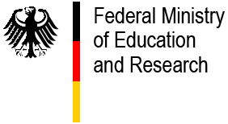

BMBF Project: CORAL. Call: Flexible, resilient, and efficient machine learning models.
[2024 - 2027]
Constrained retrieval-augmented language models.
Partners: G. Heyer (Institute for Applied Informatics), C. Hänig (Hochschule Anhalt), P. Leinen (German National Library, DNB)
Constrained retrieval-augmented language models.
Partners: G. Heyer (Institute for Applied Informatics), C. Hänig (Hochschule Anhalt), P. Leinen (German National Library, DNB)